The slide of the lecture is on the left, the same figure on the right, computed in the browser from the same data. The ▶ button moves the parameter step by step.
Mean–Variance Optimisation · Estimation Risk · Covariance Shrinkage · Black–Litterman · Risk Parity and Hierarchical Risk Parity · Out-of-Sample Evaluation · A Portfolio of BVB Blue Chips · Case Studies: The Implementable Frontier and Volatility-Managed Portfolios
Mean–Variance Optimisation
Two Assets: How Correlation Diversifies
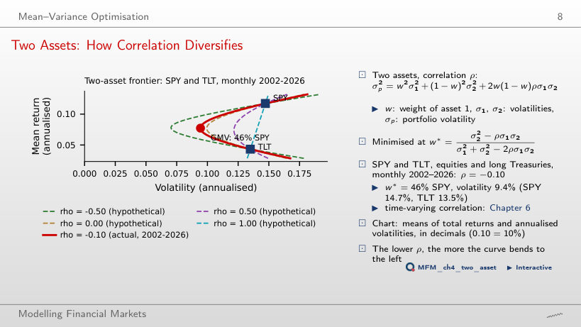
Answer
It falls from 13.5% to zero. At a correlation of 1, the minimum-variance portfolio is TLT alone; below a correlation of 0.92 (the ratio 13.5/14.7) it also holds SPY. At the estimated correlation, −0.10, it holds 46% in SPY and has a volatility of 9.4%. At −1, with 48% in SPY, the volatility is zero. Portfolio volatility equals the weighted average of the volatilities only when the correlation is 1.
The Frontier of US Sectors
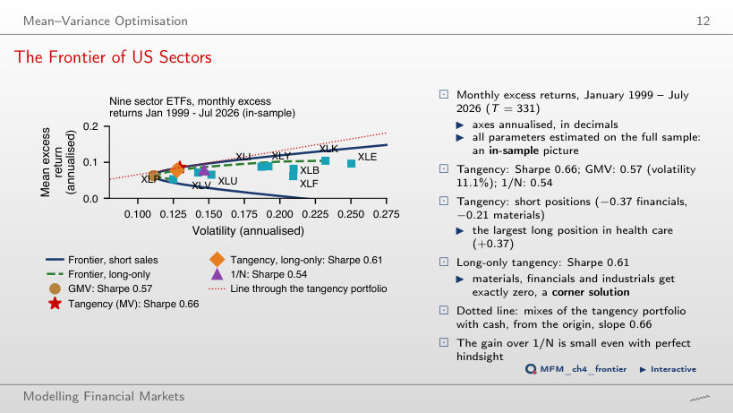
Answer
No. The tangency portfolio is short XLF (−37%) and XLB (−21%), although both have positive means. The sign of a weight depends on the whole vector of means and on the covariances: the 0.85 correlation of XLB with XLI or the low Sharpe ratio of XLF do not explain it on their own. The long-only constraint lowers the Sharpe ratio from 0.66 to 0.61.
Estimation Risk
Error Maximisation: Estimated versus Realised Frontiers
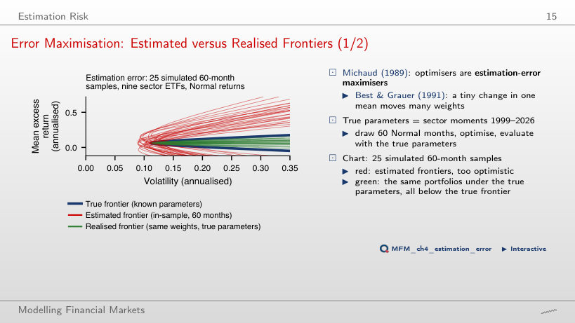
Answer
In about 4% of the samples. In the simulation on this page, 18 of the 500 portfolios (3.6%) beat 1/N; in the lecture, with 2,000 portfolios, 4%. The median Sharpe ratio evaluated with the true parameters is 0.30, against 0.54 for 1/N. The median in-sample estimated Sharpe ratio is 1.51 on this page and 1.56 in the lecture.
Unstable Weights
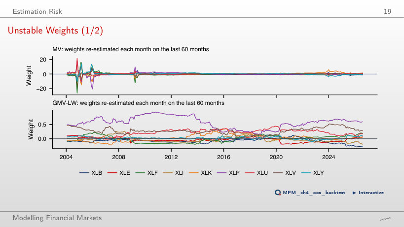
Answer
In July 2026, the last month, the gross exposure (sum of absolute weights) is 7.1 for MV and 1.9 for GMV-LW: shrinkage does not eliminate short positions. Over the whole period, the medians are 4.9 for MV and 1.5 for GMV-LW. The largest absolute MV weight is 26; in 90% of the months the MV gross exposure exceeds 3.
How Long Must the Window Be to Beat 1/N?
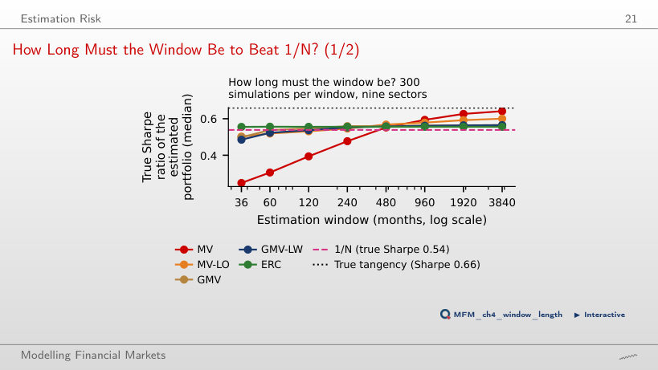
Answer
Among the tested windows, the first is 480 months: the median MV Sharpe ratio is 0.55, against 0.54 for 1/N; at 240 months it is still 0.48. GMV passes 1/N from 120 months, and ERC is above 1/N at every window, because they do not use estimated means.
Covariance Shrinkage
Sample Eigenvalues versus the Noise Band
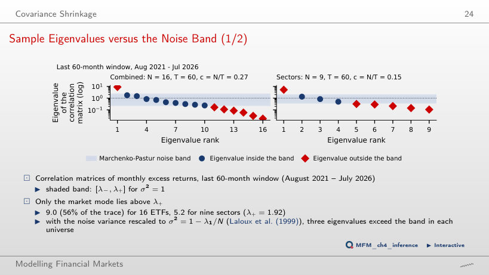
Answer
Only one, 9.02: the common market factor, which explains 56% of the total variance. For N = 16 and T = 60, the band is [0.23, 2.30]. Only one eigenvalue exceeds the upper edge; nine lie inside the band, and six lie below the lower edge.
Shrinkage on US Sectors
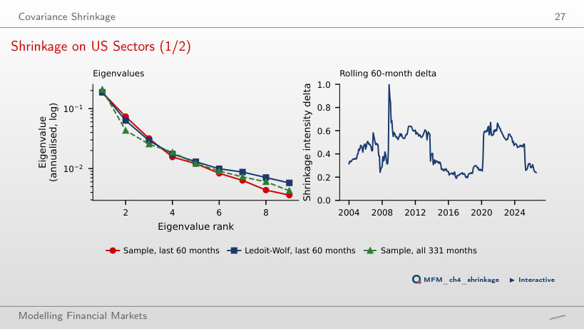
Answer
The smallest eigenvalue rises (from 0.0036 to 0.0058 at δ = 0.25) and the condition number drops from 52 to 32.1. The estimated Ledoit–Wolf intensity on the last 60 months is 0.24, giving a condition number of 32.5. The largest eigenvalue barely changes (from 0.1861 to 0.1871). Even at δ = 1 the eigenvalues do not become equal: the constant-correlation target has a condition number of 21. The GMV weights become less extreme.
Black–Litterman
Black–Litterman on US Sectors
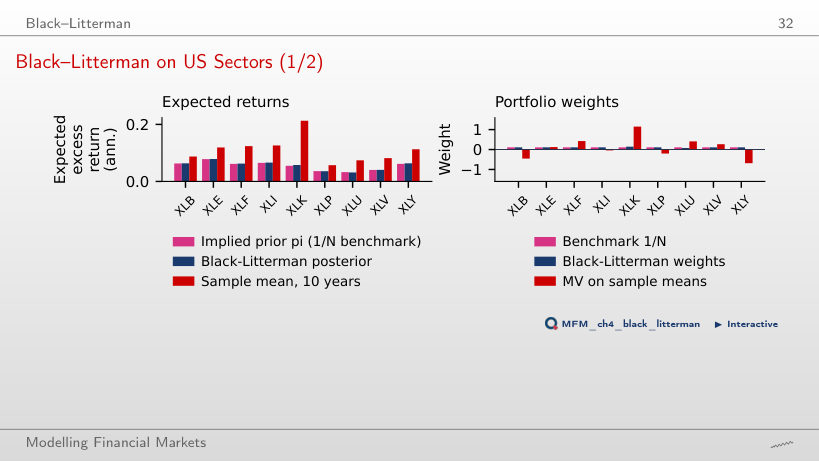
Answer
They do not. The XLK weight rises and the XLU weight falls by the same amount, 3.3 percentage points. The posterior XLK − XLU difference is 2.6% a year, between the prior mean of 2.2% and the view of 3%. The means of the other sectors move through their correlations with XLK and XLU, but their weights stay at 1/N.
Risk Parity and Hierarchical Risk Parity
Weights versus Risk Contributions
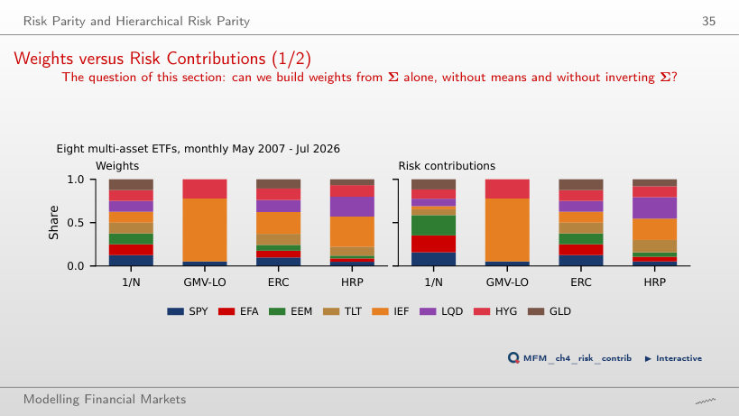
Answer
69%. Using only the individual variances, without covariances, their share would be 64%. Equal risk contribution (ERC) moves capital towards Treasuries: IEF receives 25.1%, and each asset contributes 12.5% of the risk.
HRP on 16 ETFs
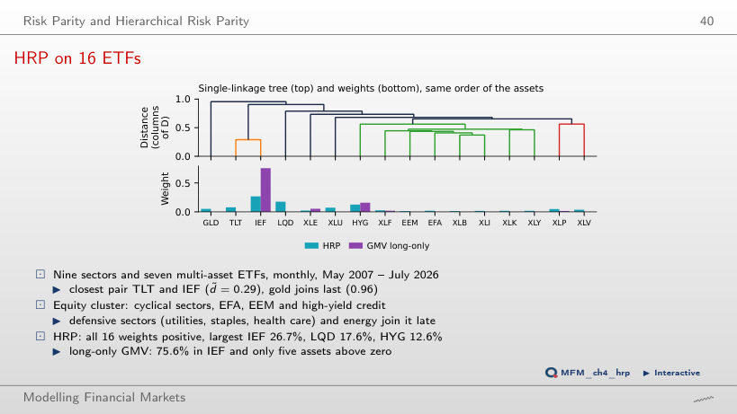
Answer
HRP orders the assets by the correlation tree, computes each group portfolio’s variance using inverse-variance weights and recursively allocates capital between groups. Covariances enter these variance calculations without inverting the matrix, an inversion that amplifies estimation errors. Long-only GMV puts non-zero weights on only 5 of the 16 ETFs.
Out-of-Sample Evaluation
Out-of-Sample Growth: Multi-Asset
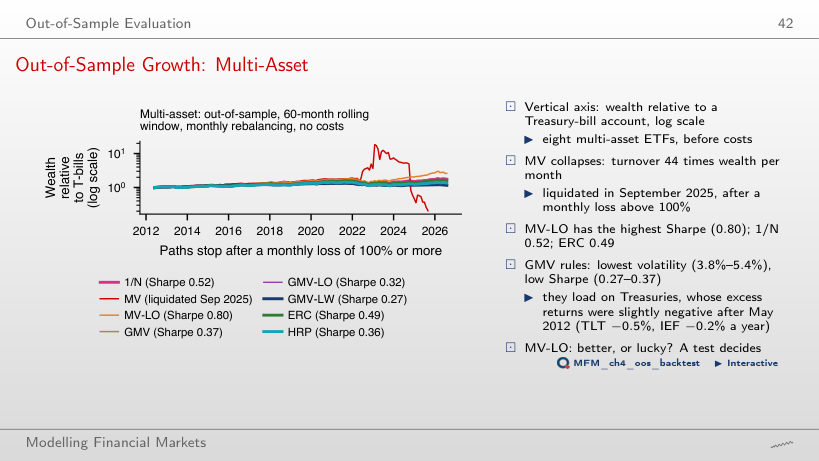
Answer
MV-LO, with 0.80, followed by 1/N with 0.52 and ERC with 0.49. Unconstrained MV is liquidated in September 2025, after a monthly loss above 100%: its wealth reaches zero, so it is not ranked.
Sharpe Ratios Across Universes
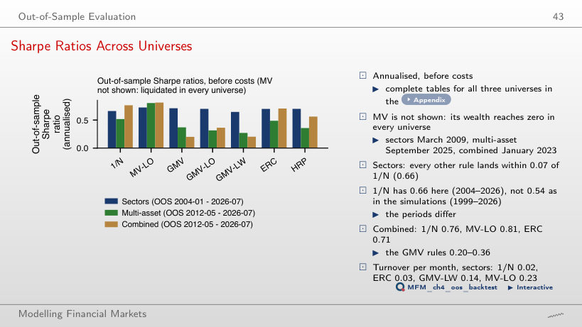
Answer
No. The ranking depends on the evaluation period. In sectors, HRP beats 1/N when evaluation starts in 2004 (0.70 against 0.66), but falls below 1/N when it starts in 2019 (0.79 against 0.80). Unconstrained MV is not shown: its wealth reaches zero in all three universes.
Sharpe Ratios after Costs
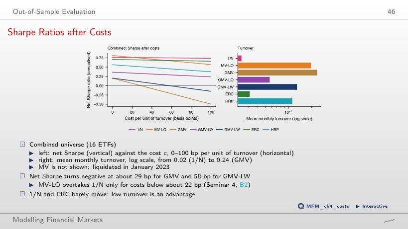
Answer
At about 29 bp: the average monthly cost then equals the mean gross excess return of GMV, which trades 24% of its wealth a month on average, bringing its net Sharpe ratio to zero. GMV-LW falls below zero at about 58 bp, and MV-LO drops below 1/N at about 22 bp. 1/N only drops from 0.76 to 0.75 at 50 bp. MV is not shown: it is liquidated in January 2023.
Is Anything Better than 1/N?
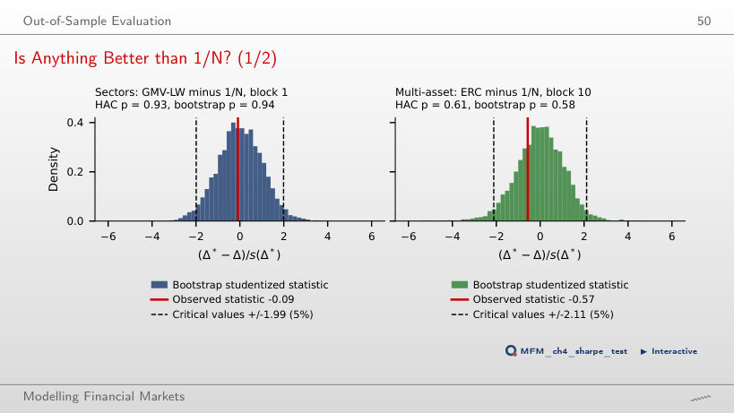
Answer
No. The difference of Sharpe ratios is −0.02, with p = 0.93 (HAC) and p = 0.94 (bootstrap). A large p-value is not the probability that the difference is real. The histogram shows centred bootstrap differences; the reported p-value comes from the studentized bootstrap test. None of the estimated rules beats 1/N significantly in the three universes.
A Portfolio of BVB Blue Chips
BVB Portfolios versus BET-TR
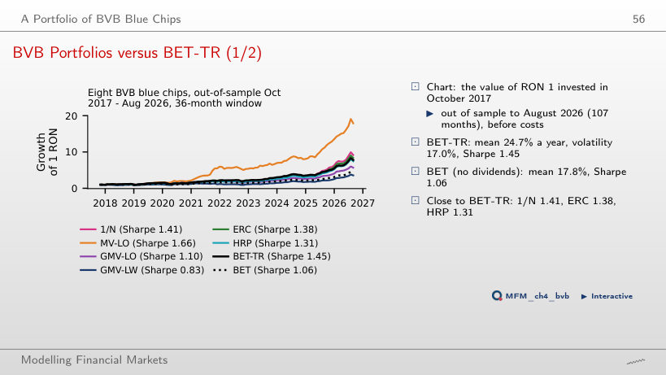
Answer
MV-LO has a Sharpe ratio of 1.66 against 1.45 for BET-TR, but the difference is not significant (p = 0.44, HAC). An insignificant test does not show that the two population Sharpe ratios are equal: it only shows that the data do not separate them. 1/N has 1.41 and ERC 1.38.
Case Studies: The Implementable Frontier and Volatility-Managed Portfolios
Volatility Management on the Course Data
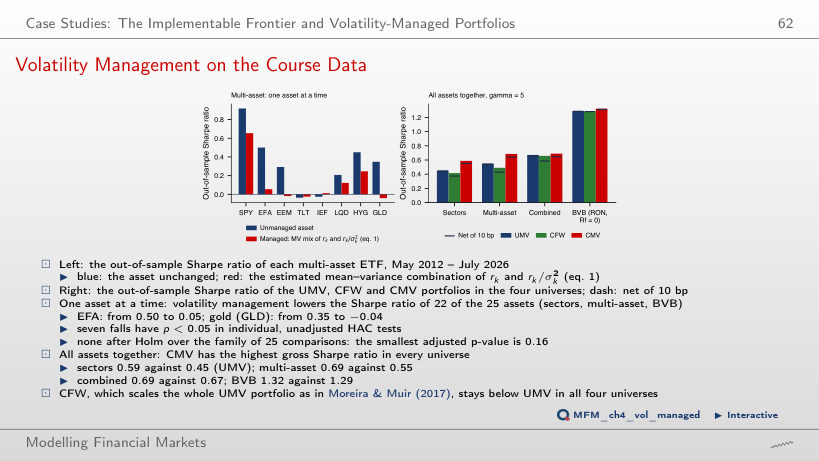
Answer
Yes, but the difference is not significant. CMV has a gross Sharpe ratio of 0.685, against 0.551 for UMV, with a one-sided bootstrap p-value of 0.25, because the relative weights of the assets change with market volatility. CMV has a higher gross Sharpe ratio than UMV in all four universes, but the difference is not significant in any of them. CMV trades 1.08 of its wealth a month against 0.21 for UMV, and at 42 bp per unit of turnover the advantage disappears.
US ETFs: monthly excess returns over the one-month Treasury bill; EODHD prices, risk-free rate from the Kenneth French Data Library. BVB: EODHD prices, in RON.